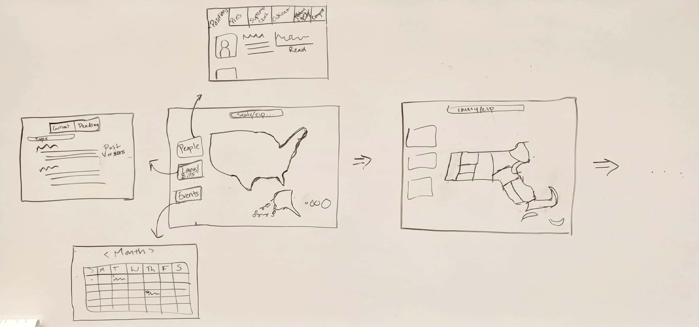

Project Brief
The Problem
People are not informed about their government and it is challenging for them to find information at a level that is accessible for many people. It is time-consuming and requires a lot of organization for people to attempt to educate themselves about their government enough to vote, let alone take other civic action, like knowing if an issue is relevant to you and calling the government about it. This high entry bar leads people to feel jaded and ineffective towards their government and politics in general, thus disengaging and missing some of the points that they might be able to effect change.
The Effect
We will provide information and paths forward in an easy-to-understand way. This will allow people who are currently too busy or apathetic to still keep track of what is happening, hopefully promoting the way they interact with their civic duty. We hope to target people who are currently unengaged with the government. By providing easy access to information and simplifying interpretation of key points, we will help people engage with politics in a way that might counteract the feelings of jadedness and gloom that often arise.
The Thought
By creating an interactive map of America that allows you to center in on your local place either by searching a zip code or zooming in on your area, we will present information in a localized, fun, easy-to-use way. The map allows you to view the politicians and representatives, bills and laws, events and actionable items, etc. at the federal, state, county, district, etc. levels. This addresses the core problem of government literacy by consolidating information and making it accessible. Nicer visual design and intuitive user interaction will make it a more pleasant experience, and by reporting facts — bills, events, dates, etc — rather than opinions, it may be less likely to discourage the people who use it.
The Plan
For this project to work, we will need to collect a variety of information. Some key pieces are:
- What do people put effort into learning about now? (i.e. what are they willing to take time out of their day to better understand?)
- What do people ignore or miss? What information do people learn or understand at a time that they feel is too late to take action?
- What populations are most unengaged with the government?
- How do people currently prefer to consume news and education themselves on other information about their government?
- What are the key factors that keep our users from seeking out information or prevent them from understanding information?
- What do policy makers/people involved in civic practices consider most important for others to know?
The Goal
To accomplish our team and individual goals, we will have an additional weekly meeting to make sure everything gets done. We will also communicate using messenger and email to share our progress. This space interests all of us and has room to grow to encompass a variety of our learning goals, including interesting user interactions, data visualization, and adaptability. This should be enough to keep us engaged throughout the semester.